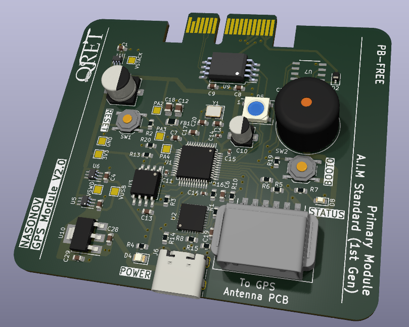
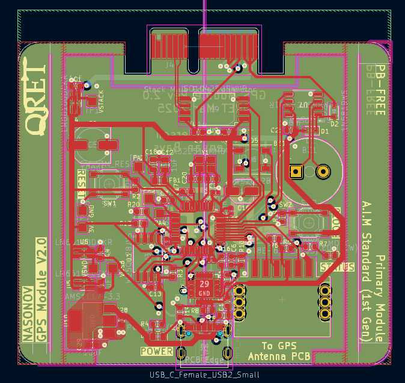
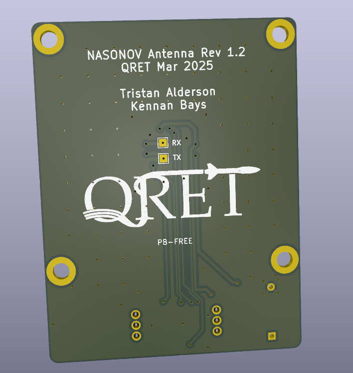

Project
SAM M10Q GPS Board
GPS receiver daughter board for in-flight navigation and post-flight recovery, built around the u-blox SAM-M10Q.
The Problem
GPS modules tend to lose lock during high-G flight. Vibration rattles connections loose, and if the RF path picks up noise from nearby digital lines the receiver struggles to reacquire after motor burnout. Without a good position fix after apogee, you're searching a field by hand.
What I built
The SAM-M10Q is a GPS-on-module from u-blox that we soldered onto a custom 2-layer daughter board. The board exposes I2C through a connector and keeps the GPS on its own PCB, physically separated from the comms module on the avionics stack. That separation is the point — by moving the GPS microcontroller and its RF antenna away from the CAN transceiver and WiFi radio, we cut down on the interference that kills signal quality.
One thing that actually helped was just making the daughter board a bit larger than the module strictly needs. The SAM-M10Q receives signals through the ground plane it's connected to, so a bigger board means a bigger ground plane and better reception. It's a simple trick but it made a measurable difference.
Highlights
- Custom 2-layer GPS daughter board with I2C breakout connector.
- Physically separated from avionics stack comms to reduce RF interference.
- Enlarged ground plane for improved signal reception.
- Validated integration with the backplane harness and avionics bay connectors.
Media






3D Viewer
Drag to rotate, scroll to zoom.